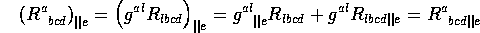

Because the covariant derivative of the metric is 0 and covariant differentiation distributes over products of tensors the covariant derivative of a shifted object is the equivalent shift of the covariant derivative of the parent object:

This fact makes it possible to compute covariant derivatives of shifted objects resonably efficiently, given that actually computing a covariant derivative is very costly compared to shifting an object. If cov() is given an object that is the offspring of a parent, the parent is examined for a covariant derivative, and, if none is found, it is computed. That covariant derivative is then shifted so that its indices match the original offspring, with the addition of one covariant tensor index. Thus,
#: cov(R[@a,b,c,d]); computing g1_R_CD computing g1_R_CD_b SHIFT finished. g1_R_CD_bIn this way two corresponding families of objects are built, one having the original object as the parent, and the other having the covariant derivative as the parent. Rather than having to type the full object name, the user can read individual components by typing, for example, g1_R[@1,2,1,2,||0]. An assignment to such a component requires the full object name, however.